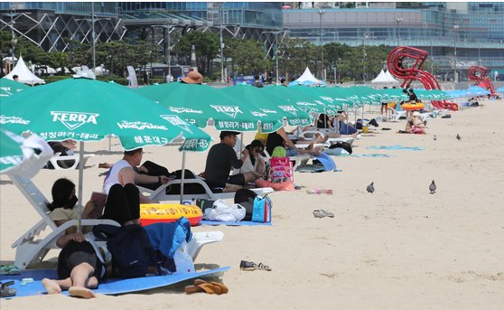

물속에서도 꼭 마스크···밤바다 '치맥파티'는 참아주세요
2021.07.02 05:00
오는 3일 개장하는 충남 태안의 만리포해수욕장 인근 상인들이 한 말이다. 상인들은 해수욕장 개장이 눈앞으로 다가오자 ‘기대 반 걱정 반’으로 손님 맞이 준비를 하고 있었다. 지난해 신종 코로나바이러스 감염증(코로나19) 여파로 피서객이 반 토막 나는 바람에 큰 손실을 본 기억이 떠올라서다. 상인들은 최근 백신 접종이 급속히 이뤄지는 데다 지자체별로 방역기준이 속속 완화되고 있어 올해 여름장사에 잔뜩 기대를 거는 표정이었다.